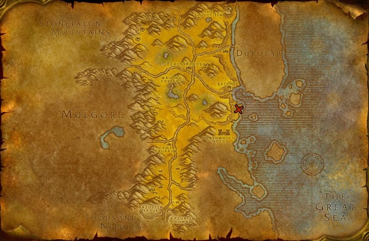
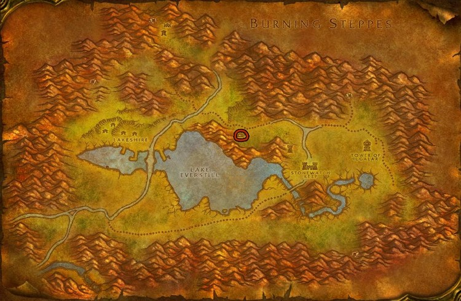
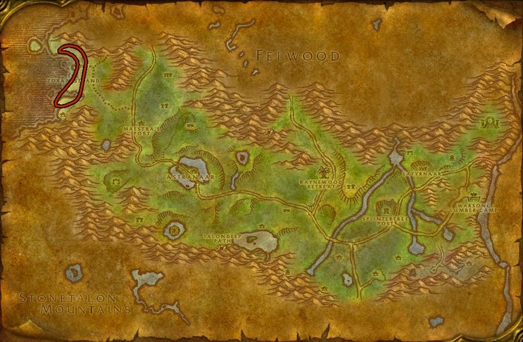
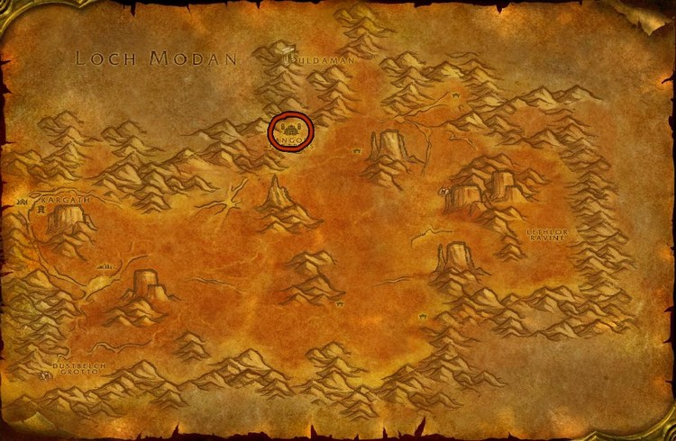
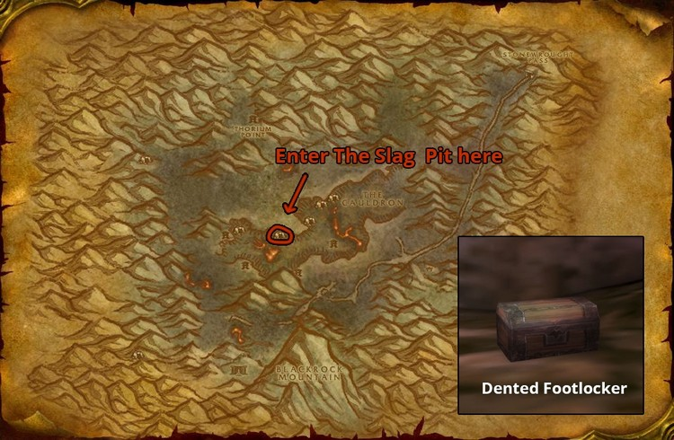
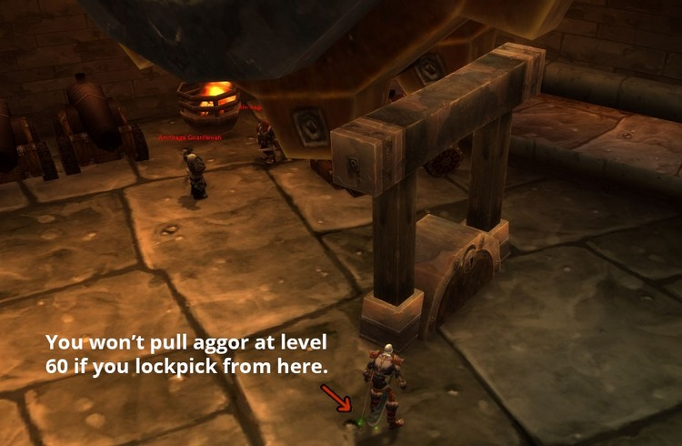
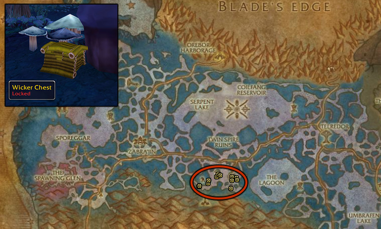
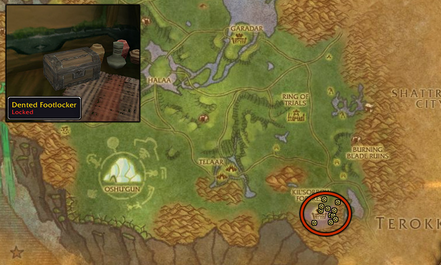
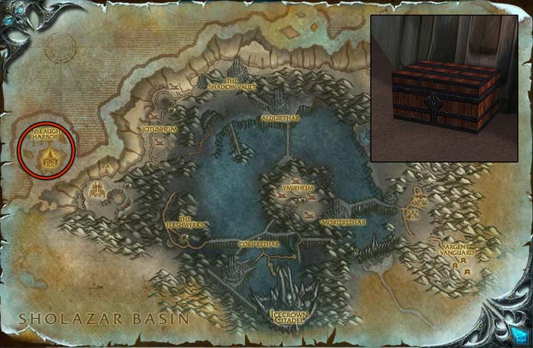

This Lockpicking guide will show you the fastest way how to get your Lockpicking skill up from 1 to 400 in Wrath of the Lich King Classic.
The basic formula for your maximum lockpicking skill at a particular level is (5 * level). So, for example, if you have a level 20 character, your maximum lockpicking skill will be 100.
Glyph of Pick Lock
Glyph of Pick Lock reduces the cast time of your Lockpicking skill by 100%, making all Lockpicking instant. This massively speeds up the process of leveling Lockpicking, so I recommend buying this Glyph from the Auction House before you start.
1 - 100 in Barrens / Redridge Mountains
The Buccaneer's Strongboxes near Rachet in The Barrens respawn after a few seconds, so even two rogues can skill up there at the same time without trouble. They are inside the ship at the location marked on the map below.
There's another chest on the bottom of the ship called "The Jewel of the Southsea". Don't try to open this if you are low level, because it will spawn a mob that will kill you.

There are a bunch of Practice Lockboxes in Redridge Mountains north from Lake Everstill. These respawn really fast, so skilling up to 100 will be really easy.

100 - 150 in Ashenvale
Go to Zoram Strand in Ashenvale and look for Waterlogged Footlockers along the shore (on land).

150 - 200 in Badlands
Go to Badlands - Angor Fortress. You will find two kinds of footlockers there. You will need a lockpicking skill of 175 to open the Dentened Footlocker. Don't bother trying to Pick Pocket the mobs. The boxes are too low and won't give any skill points.
- Battered Footlocker - skill 150 - Upstairs
- Dented Footlocker - skill 175 - Downstairs

200 - 250 in Searing Gorge
Go to the middle Searing Gorge and go inside the cave called The Slag Pit. You will find a bunch of footlockers there. It would be best if you also tried to Pick Pocket mobs to get a few Sturdy Junkbox.
Stay on the lower part of the Slag Pit until you reach 225 because you can't open the lockboxes at the upper part yet.

250 - 300 in Blackrock Depths
You can level the last 50 points in the Blackrock Depths (BRD) dungeon.
- After you enter, turn to the left, and unlock the first door.
- Then take the first right, and open the next door.
- Go left and lockpick the first door.
- Go through the door and lockpick the large wooden object sticking out of the ground below the giant gear.
Once you picked all 4 locks, go out, reset the instance by right-clicking over your portrait, then click the "Reset all instance" button. You can only do 5 instance runs in an hour, which means you can only get 20 skill points in an hour, but if you pickpocket a bunch of mobs during each run, you will have enough Strong and Heavy Junkboxes to reach 300. Or you can wait until you can go inside again.
The Shadowforge Lock

300 - 350 in Zangarmarsh
Opening Wicker Chests in Zangarmarsh is the best way to level up lockpicking to 350. They are prevalent and respawn quickly.
There are several chests in each group of huts in the marked area. You can find them most commonly in the gaps between hut entrances, inside the small huts, and inside the large building in the westernmost group of huts (top floor too). They also spawn near empty baskets, barrels, cages, and inside wagons.
If there are other rogues at Zangarmarsh, you can switch to opening Dented Footlockers in Nagrand after reaching Lockpicking 325. I think Zangarmarsh is a bit faster, so if you are the only one at Zangarmarsh, there is no reason to go to Nagrand.

350 - 385 in Nagrand
The Dented Footlockers are usually close to the walls, fences, inside tents, at the top of each tower, and inside big buildings.
These footlockers will give skill points up to 400, so you could stay there even after 385. But the skill points gains will be kinda slow as you are getting closer to 400.

385 - 400 in Icecrown
Open Scarlet Onslaught Trunks at Onslaught Harbor in Icecrown.
